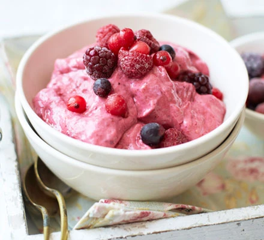

INSTANT FROZEN BERRY YOGHURT

Instant Frozen berry Yoghurt
DESCRIPTION
A type of dairy product that is produced from whole, low-fat, or nonfat milk that is fermented with bacterial cultures. The bacteria allows the milk to congeal, giving it a thick, creamy texture. It is frozen and served just like ice cream.
INGREDIENTS
- 250g frozen mixed berry
- 250g 0%-fat Greek yogurt
- 1 tbsp honey or agave syrup
PREPARATION:
- Blend berries, yogurt and honey or agave syrup in a food processor for 20 seconds, until it comes together to a smooth ice-cream texture. Scoop into bowls and serve.
Check Out More Recipes Here
Check Out The Recipe For The Sweet Ghanaian Jollof
Wow, Fried Rice Made In 12 Minutes, Get Recipe Here